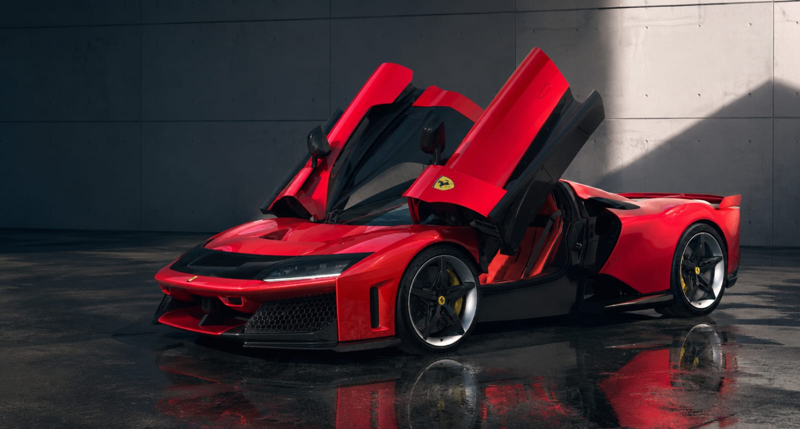
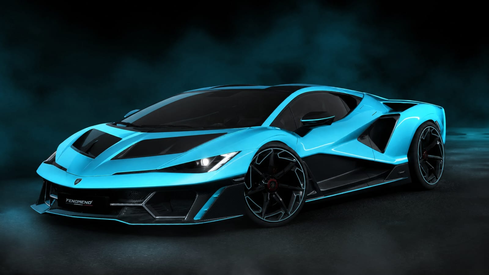
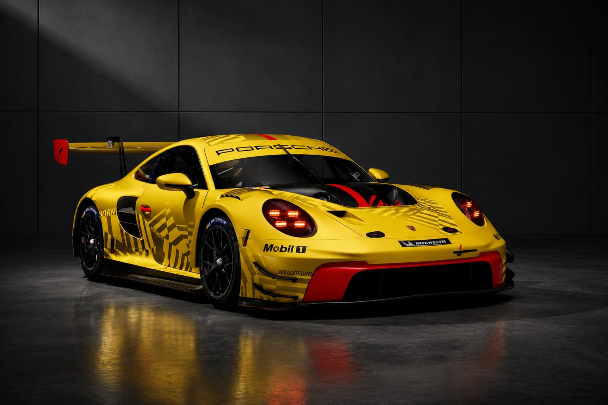
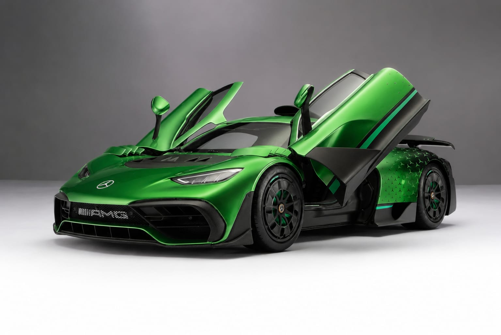
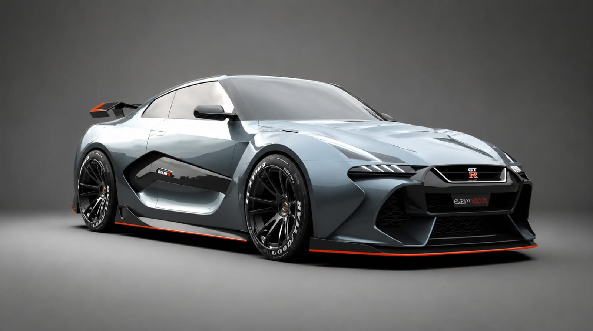

Top 5 autos del 2026
18 mayo 2026 | 12:00 PM

La industria automotriz continúa evolucionando a una velocidad impresionante. Entre tecnología híbrida, diseños futuristas y niveles de potencia nunca antes vistos, el 2026 promete convertirse en uno de los años más emocionantes para los amantes de los autos.
Estas son algunas de las máquinas que están marcando tendencia y captando la atención del mundo automotriz este año.
1. Ferrari F80

Un súper hibrido inspirado en la Formula 1, combina una aerodinámica futurista y un diseño agresivo manteniendo su ADN, fue diseñado en conmemoración a su 80 aniversario, de este modelo solo fabricaron 799 unidades, cuenta con un motor V6 biturbo de 3.0 litros y tres motores eléctricos que dan una potencia total de 1.184. (Ferrari,2026)
2. Lamborghini Fenómeno

Este súper deportivo es few-off, solo se construyeron 29, cuenta con un motor V12 combinado con 3 motores eléctricos con una potencia total de 1080 cv, una velocidad máxima de 350 km/h, una aceleración de 0 a 100 en 2,4s, lo que me llamo la atención fue su diseño futurista, también tiene unas luces únicas con forma de Y.(Lamborghini ,2026)
3. Porsche 911 GT3 RS 2026

El súper deportivo creado para circuitos que sabe dominar las calles, cuenta con varias mejoras aerodinámicas, tiene un motor bóxer atmosférico de 4,0 litros. aceleración de 0 a 100 km/h en 3,2 segundos y alcanza una velocidad máxima de 296km/h. (Carbuzz.2026)
4. Mercedes-AMG One

Equipado con la tecnología de F1, un motor V6 hibrido de 1, 6 litros, cuatro motores eléctricos, con una aleta trasera similar a las que usan en las 24 horas de Le Mans, solo se fabricaron 275 unidades, una velocidad máxima de 352 km/h y una aceleración de 0 a 100km/h en 2,9segundos (Diariomotor, 2026)
5. Nissan GT-R R36

El esperado GT-R R36 representa la evolución moderna de una de las leyendas japonesas más importantes de la historia. Aunque mantiene la esencia agresiva del “Godzilla”, incorpora nuevas tecnologías y un enfoque más moderno para competir en una nueva generación de superdeportivos.
El futuro del automovilismo
El 2026 demuestra que la industria automotriz vive una transformación histórica donde la tecnología híbrida, la electrificación y la innovación están redefiniendo el concepto de velocidad. Sin embargo, algo continúa intacto: la pasión que millones de personas sienten por los automóviles más extraordinarios del mundo